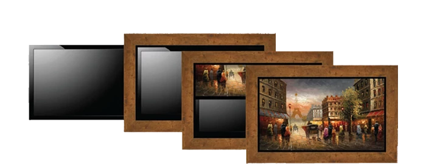
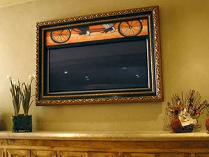
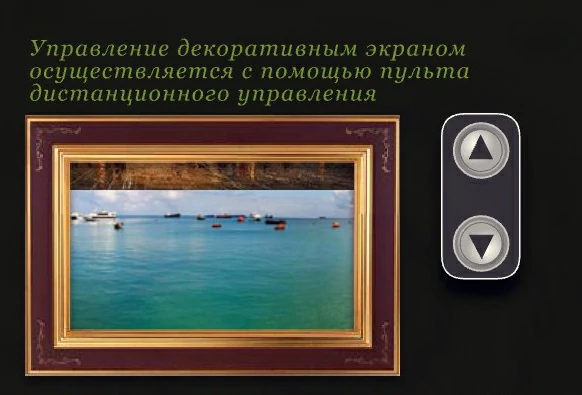

|  |
маскировка телевизора в интерьере телевизор в багетной раме телевизор как картина телевизор в багете спрятать телевизор картина поднимается вверх телевизор в рамке багетная мастерская в Москве |
ArtScreen. Маскировка телевизора багетной рамой с картиной в интерьере вашего дома.  Артскрин — идеальная маскировка телевизора в интерьере. Cистема Артскрин — это инновационное решение для создания эстетичного интерьера, которое позволяет скрыть телевизор под картиной в багетной раме. Мы предлагаем уникальную возможность превратить телевизор в элемент декора, который органично вписывается в любой интерьер — будь то классика, минимализм или современный стиль. Наша продукция включает в себя багетные рамы на заказ с различными полотнами картин. Мы предлагаем широкий выбор картин и багета, подходящих для вашего интерьера. Все работы изготавливаются в России, с возможностью подбора индивидуальных размеров и оформления. Артскрин — это не просто решение для скрытия телевизора, но и способ создать уникальный дизайн пространства, который будет радовать глаз. Основной сайт компании: artscreen.su — для более подробной информации и оформления заказа. Как спрятать, замаскировать телевизор в багете с картиной которая поднимается вверх в интерьере дома. Интересное решение плазменную панель или ЖК телевизор на стене любого размера и пропорций замаскировать картиной - органично вписав его в интерьер комнаты. Прекрасно оформленные и отделанные рамы из натурального дерева, на первый взгляд служат только обрамлением картин известных мастеров, но стоит нажать на кнопку пульта, и полотно плавно убирается вверх, открывая зрителям экран плазменной панели или вмонтированный в стену экран проекционного телевизора. Таким образом, можно скрыть внутристенный сейф, нишу, бар. |
{kind=link}